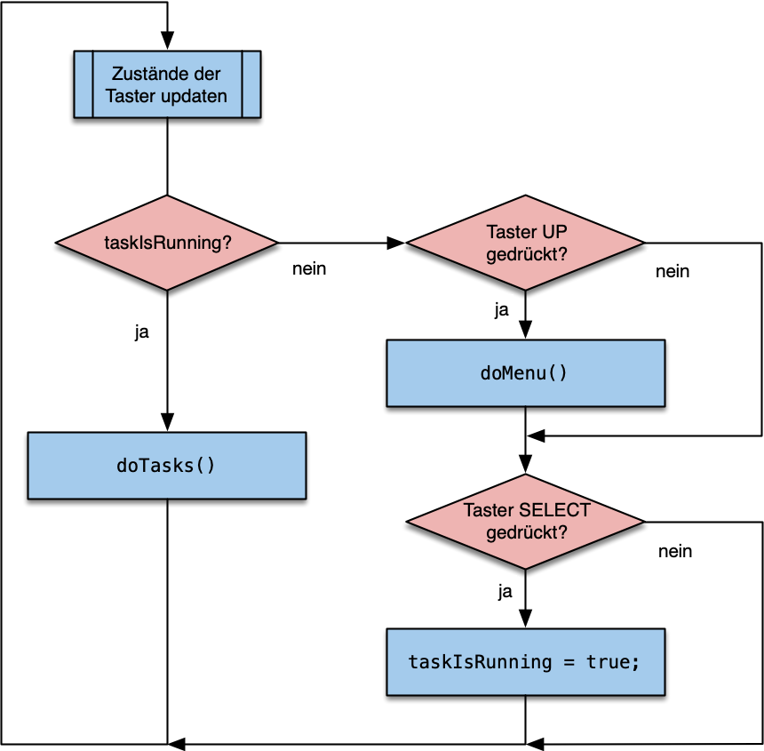

Eine Menüsteuerung mit zwei Tastern und drei LEDs
Mit dem folgenden Programm kann eine einfach Menüsteuerung mit zwei Tastern (Menüpunkt ändern, Menüpunkt aktivieren) und drei LEDs realisiert werden.
Als Grundlage für die Menüsteuerung dient ein endlicher Automat zur Auswahl verschiedener Menüeinträge. Für jeden Menüeintrag wird eine unterschiedliche Kombination leuchtender LEDs dargestellt wird. Hierfür wird die Funktion setLeds(bool pLed1, bool pLed2) genutzt. Neben den LEDs wird auch der serielle Monitor zur Darstellung der Menüsteuerung genutzt.
// ---------------------------------------------------
// Bei jedem Aufruf ändert sich der gewählte Menüeintrag.
// Es findet als ein Übergang (Änderung) des `menuState`
// statt: (old state -> new state)
// ---------------------------------------------------
void doMenu() {
switch (menuState) {
case STATE0: // old menu state
menuState = STATE1; // new menu state
setLeds(0, 1); // aktuellen Menüeintrag anzeigen
Serial.print("\n [Menue: STATE1] ");
break;
case STATE1:
menuState = STATE2; // new menu state
setLeds(1, 0); // aktuellen Menüeintrag anzeigen
Serial.print("\n [Menue: STATE2] ");
break;
case STATE2:
menuState = STATE0; // next menu state
setLeds(0, 0); // aktuellen Menüeintrag anzeigen
Serial.print("\n [Menue: STATE0] ");
break;
}
}
Zusätzlich zum endlichen Automaten der Menüsteuerung gibt es die Funktion doTasks(), welche - wenn der Menüeintrag aktiviert wurde - die zugehörige Funktion doEvent1(), doEvent2(), etc. aufruft. Diese Event-Funktionen enthalten den für den entsprechenden Menüeintrag auszuführenden Programmcode. Der Rückgabewert der Event-Funktionen gibt an, ob das Event bereits beendet ist, oder ein weiteres Mal aufgereufen werden soll.
// ---------------------------------------------------
// Die Funktion ruft mit Hilfe der globalen Variable
// `menuState` die `doEvent()` Funktionen für den aktivierten
// Menüeintrag auf. Sie sollte regelmäßig in loop()
// aufgerufen werden.
// ---------------------------------------------------
void doTasks() {
switch (menuState) {
case STATE0:
taskIsRunning = !doEvent0(); // doEvent0() returns true if finished.
break;
case STATE1:
taskIsRunning = !doEvent1();
break;
case STATE2:
taskIsRunning = !doEvent2();
break;
}
}
Die Beispiele für die Event-Funktionen schalten eine zuerst LED an und nach einer Sekunde (doEvent0()) oder fünf (doEvent1()) Sekunden wieder aus. Diese Event-Funktionen sind blockierend, unterbrechen also das Programm, bis sie beendet wurden.
// ---------------------------------------------------
// Jede `doEvent` Funktion muss `true` zurückgeben, wenn
// sie beendet is. Für jeden Menüeintrag sollte es eine
// eigen `doEvent` Funktion geben,
// ---------------------------------------------------
// Blockierendes Event
bool doEvent0() {
digitalWrite(pinTaskRunning, HIGH);
Serial.print("Event 0 is blocking for 1 sec . ");
delay(1000);
Serial.print("finished");
digitalWrite(pinTaskRunning, LOW);
return true; // gibt `true` zurück, wenn die Funktion beendet ist
}
// Blockierendes Event
bool doEvent1() {
digitalWrite(pinTaskRunning, HIGH);
Serial.print("Event 1 is blocking for 5 sec ..... ");
delay(5000);
Serial.print("finished");
digitalWrite(pinTaskRunning, LOW);
return true;
}
Das Funktion doEvent2() schaltet eine LED an und wartet dann auf eine Tastereingabe, um die LED wieder auszuschalten und das Event zu beenden. Dieses Event ist nicht blockierend.
// Nichtblockierendes Event
bool doEvent2() {
digitalWrite(pinTaskRunning, HIGH);
Serial.print("\n\t\tEvent 2 is running (Press Button) ");
if (debouncerSelect.fell()) {
Serial.print(" ... finished");
digitalWrite(pinTaskRunning, LOW);
return true; // Task wurde durch den Taster beendet.
}
else
return false; // Task ist immernoch aktiv und wird beim nächsten loop() Durchlauf erneut aufgerufen.
}
In der loop()-Funktion werden zuerst die mit der Bounce2 Bibliothek entprellten Taster regelmäßig geupdatet.
Anschließend wird das Menü gesteuert:
- Wenn ein Task (
doEvent) noch aktiv istif (taskIsRunning), soll dieser erneut aufgerufen werden. - Ist kein Task aktiv, werden die Taster zur Menüsteuerung eingelesen:
- Wurde der UP Taster gedrückt, wird das Menü aktualisiert, also ein neuer Menüeintrag angezeigt.
- Wurde der SELECT Taster gedrückt, wird der Menüeintrag aktiviert. Beim nächsten
loop()Durchlauf wird dann mitdoTasks()die zugehörige Event-Funktion aufgerufen.
// ---------------------------------------------------
// void loop()
// ---------------------------------------------------
void loop() {
debouncerSelect.update(); // check for button inputs
debouncerUp.update();
if (taskIsRunning) {
doTasks();
}
else {
if (debouncerUp.fell()){ // if button was pressed
doMenu();
}
if (debouncerSelect.fell()){ // if button was pressed
taskIsRunning = true;
}
}
}
Im Flussdiagramm ist der gesamte Ablauf noch einmal zusammengefasst.

Das Projekt simpleMenu kann auch als ZIP-Datei herruntergeladen werden.